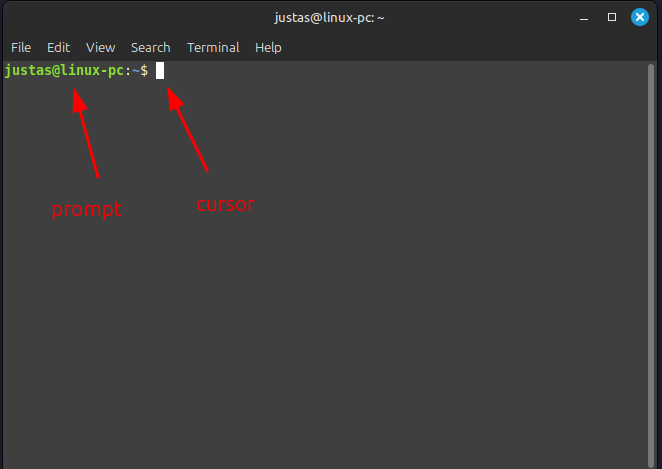
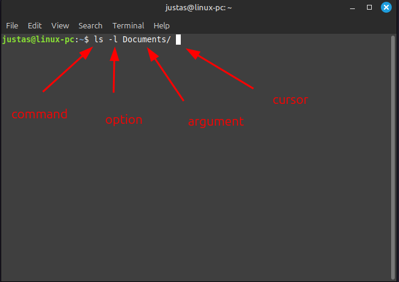
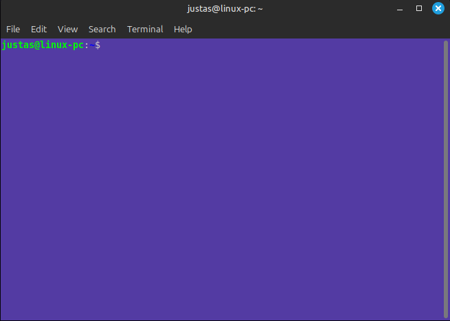
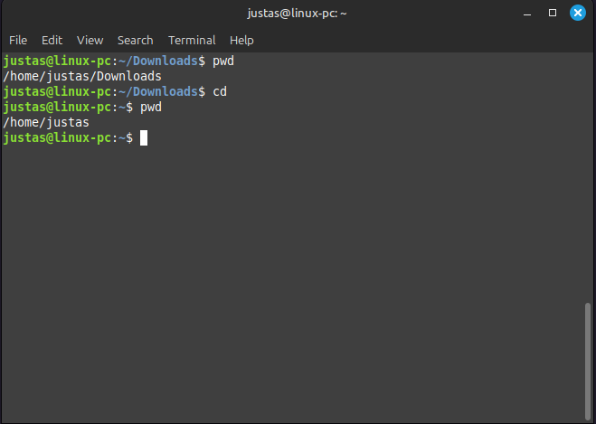
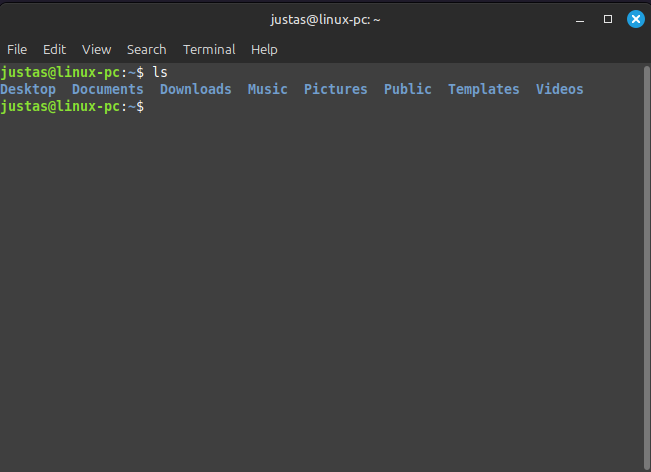

5 Pagridinės BASH komandos
5.1 Shell ir Terminalas
Shell (liet. apvalkalas) yra programinė įranga arba komandų interpretatorius, leidžiantis vartotojams bendrauti su operacine sistema naudojant teksto komandas. Kai įvedate komandą į Shell, jis ją paverčia į veiksmus, kuriuos supranta kompiuteris. Populiariausi Shell tipai, tokie kaip Bash (Bourne Again Shell), Zsh (Z Shell), ir ksh (Korn Shell), yra ypač naudingi, nes jie leidžia automatizuoti įvairias užduotis ir vykdyti sudėtingas komandas. Šalia to, Shell turi ir programavimo kalbos savybių, leidžiančių rašyti skriptus - failus su nuosekliomis komandomis, kurios vykdomos viena po kitos. Tai reiškia, kad Shell gali būti naudojamas ir programavimui, ypač sistemų administravimo ir automatizavimo darbams.
CLI (Command Line Interface, liet. komandinės eilutės sąsaja) yra vartotojo sąsaja, kurioje komandos įvedamos (input) tekstu ir rezultatai rodomi kaip teksto išvestis (output). Skirtingai nuo grafinės vartotojo sąsajos (GUI), kurioje naudojami vizualiniai elementai, tokie kaip langai ir mygtukai, CLI leidžia tiesiogiai rašyti instrukcijas, kurias vykdo sistema.
Terminalas yra CLI programa, kuri leidžia jums pasiekti Shell sąsają. Jį galima įsivaizduoti kaip langą kompiuteryje, per kurį galite įvesti komandas ir matyti jų rezultatus. Terminalo programos naudojamos įvairiose operacinėse sistemose, nes jos leidžia efektyviau valdyti sistemą nei daugelis grafinių vartotojo sąsajų. Naudodamiesi terminalu, galite atlikti įvairias užduotis greičiau ir tiksliau.
Atidarykite Terminalą ir įrašykite šią komandą Terminalo lange:
which $SHELLJos atsakymas (output) parodo vykdomojo Shell failo vietą – Shell programą, kuri šiuo metu yra naudojama jūsų terminale. Taip pat iš išvesties galima matyti, koks tai Shell. Šiuo atveju, tai Bash.

Šiame skyriuje susipažinsime su šiomis komandomis:
Linux Komandos/
├── Navigacija ir informacijos gavimas/
│ ├── cd/
│ ├── pwd/
│ ├── ls/
│ ├── clear/
│ ├── history/
│ ├── whoami/
│ └── which/
├── Failų ir katalogų valdymas/
│ ├── touch/
│ ├── mkdir/
│ ├── mv/
│ ├── rm/
│ ├── cp/
│ ├── cat/
│ ├── echo/
│ ├── > ir >>/
│ ├── head/
│ └── tail/
├── Teksto paieška/
│ └── grep/
├── Failų ir katalogų paieška/
│ └── find/
├── Teisių ir savininkų keitimas/
│ ├── chmod/
│ └── chown/
└── Procesų valdymas/
├── ps/
└── top/5.2 CLI komandos
Komandinės eilutės sąsaja (CLI – Command Line Interface) yra sąsaja, kurioje komandos įvedamos tekstu ir rezultatai rodomi kaip teksto išvestis. Dirbant su CLI, yra keletas pagrindinių elementų, kurie padės suprasti ir efektyviai naudotis šia sąsaja.
5.2.1 Prompt (užklausa)
Užklausa (angl. prompt) yra teksto eilutė, kuri rodoma terminale ir nurodo, kad sistema yra pasirengusi priimti komandą. Užklausa dažniausiai rodo informaciją apie dabartinį darbinį katalogą, vartotojo vardą ar kitus naudingus duomenis. Pavyzdžiui:
main-user@linux-mint:~$Parodo vartojo vardą @ kompiuterio vardą. ~ nurodo dabar naudojamą aktyvią darbinę direktoriją, o $ reiškia, kad kompiuteris laukia įvesties. Kas yra darbinis katalogas, susipažinsime vėliau.

5.2.2 Komanda (command)
Komanda (angl. command) yra specifinis nurodymas, kurį vartotojas įveda, kad būtų atliktas tam tikras veiksmas sistemoje. Komandos gali būti naudojamos įvairiems veiksmams atlikti, pvz., failų kopijavimui, katalogų kūrimui ar informacijos rodymui. Pavyzdžiui, komanda ls rodo dabartinio katalogo turinį:
lsKartais komandos turi subkomandas. Pavyzdžiui, apt yra komanda, kuri valdo programą, atsakingą už programinės įrangos instaliavimą. Tačiau ji naudojama su subkomandomis:
apt update:: Atnaujina paketų sąrašą.apt install: Diegia nurodytą paketą.apt remove: Pašalina nurodytą paketą.apt upgrade: Atnaujina visus diegtus paketus į naujausias versijas
Kad bet kas negalėtų instaliuoti programų, šią komandą reikia vykdyti su administratoriaus teisėmis, pasitelkiant komandą sudo. Tai reiškia, kad kartais vykdomos kelios komandos vienu metu:
sudo apt update
sudo apt install cowsay5.2.3 Pasirinkimas (option) ir Argumentas (argument)
Pasirinkimas (angl. option) ir argumentas (angl. argument) yra papildomi parametrai, kurie gali būti pridėti prie komandos, siekiant tiksliau nurodyti, kaip komanda turėtų būti vykdoma.
Pasirinkimas (option): Pasirinkimas modifikuoja komandos elgesį. Jis dažnai pridedamas prie komandos su brūkšneliu (-) arba dvigubu brūkšneliu (--). Pavyzdžiui, naudojant ls -l, -l yra pasirinkimas, kuris rodo failų sąrašą ilgąja forma. Kai pasirinkimai nurodomi sutrumpinta forma, naudojamas vienas - brūkšnelis, kai išrašomas visas žodis, tada -- dvigubas brūkšnelis.
Argumentas (argument): Argumentas yra papildoma informacija, kurią komanda naudoja veikimui. Pvz., ls Documents nurodo, kad komanda ls turėtų parodyti katalogo Documents turinį. Šiuo atveju Documents yra argumentas:
5.2.4 Žymeklis (cursor)
Žymeklis (cursor): Mirksintis žymeklis rodo, kad terminalas pasirengęs priimti kitą įvestį.

5.2.5 Praktika
- Identifikuokite užklausą (prompt), komandą (command), pasirinkimą (option) ir argumentą (argumentą). Nepanikuokite, jei nepažįstate pačių komandų.
main-user@linux-mint:~$ sudo apt install -y cowsay
main-user@linux-mint:~$ cd Downloads
main-user@linux-mint:~$ rm -rf test/
main-user@linux-mint:~$ ls -alh /home/user/Downloads
main-user@linux-mint:~$ mkdir -p /project/data- Suraskite būdą, kaip sukurti skirtukus (tabs) terminale. Kartais yra labai patogu turėti kelis skirtingus langus terminale. Pvz., viename aktyviai stebėti kompiuterio temperatūrą, iš kito valdyti ir paleisti tam tikras programas, o trečiame – stebėti, ar kompiuteris nefiksuoja kokių nors klaidų. Bet kaip atidaryti skirtukus? Ir koks klaviatūros trumpinys tai padarytų?
Jei norėtumėte paleisti ne skirtuką, o atskirą langą, koks trumpinys tai padarytų?

- Susiraskite terminalo grafinius nustatymus ir pakeiskite foną, raidžių spalvą ir t.t. Raskite jums patinkantį stilių.

- Nors dažniausiai žymeklis yra blyksintis kvadratėlis, suraskite, kaip jį pakeisti į
|?
5.3 Navigacija ir informacijos gavimas
5.3.1 whoami
Komanda whoami parodo dabartinio vartotojo (user) vardą, su kuriuo esate prisijungę prie sistemos. Tai paprastas ir naudingas būdas patikrinti, kokį vartotojo prisijungimą naudojate, ypač kai dirbate su keliais vartotojais toje pačioje sistemoje.
whoamiŠiuo atveju, vartotojo vardas yra main-user

5.3.2 direktorija, katalogas ir aplankas
Terminai direktorija, katalogas ir aplankas dažnai vartojami kaip sinonimai ir paprastai reiškia tą patį – vietą failų sistemoje, kur gali būti saugomi failai ir kiti subkatalogai. Tačiau yra keletas kultūrinių ir kontekstinių niuansų:
Direktorija (angl. directory): Tai techninis terminas, dažniausiai vartojamas Unix/Linux bendruomenėje ir kitose techninėse aplinkose. Jis pabrėžia hierarchinę failų sistemos struktūrą.
Katalogas: Tai dar vienas techninis terminas, dažnai vartojamas kaip sinonimas direktorijai. Šis terminas yra paplitęs tiek techninėje, tiek kasdieninėje kalboje.
Aplankas (angl. folder): Tai terminas, dažniausiai naudojamas grafinėse vartotojo sąsajose (GUI), pavyzdžiui, Windows ir Mac OS. Nors jis iš esmės reiškia tą patį kaip direktorija ar katalogas, jis dažniau sutinkamas GUI kontekste.
5.3.3 sudo
Paprastas vartotojas (user) ir šakninis vartotojas (root) Linux sistemoje turi skirtingas teises ir privilegijas.
user:
- Teisės: Turi ribotas teises, gali atlikti veiksmus tik savo namų kataloge (home directory) ir kataloguose (directories), kuriuose turi suteiktas teises.
- Priėjimas: Negali atlikti sisteminės administracijos užduočių, pvz., negali įdiegti ar pašalinti programinės įrangos, keisti sisteminių failų ar vykdyti daugumos konfigūracijos pakeitimų.
root (šakninis vartotojas)
- Teisės: Turi pilną administracinę prieigą prie visos sistemos. Gali atlikti bet kokias užduotis, įskaitant sisteminių failų modifikavimą, vartotojų administravimą, programinės įrangos įdiegimą ir pašalinimą.
- Priėjimas: Gali atlikti bet kokias operacijas be apribojimų
Perėjimas iš paprasto vartotojo į root:
Priklausomai nuo konteksto, norint pereiti iš paprasto vartotojo į root, naudojamos komandos:
- Vienkartinė komanda su root teisėmis: Naudokite
sudonorint vykdyti vienkartinę komandą su root teisėmis. Pvz., programos įdiegimui:
sudo apt install <programa>- Pilna root sesija: Norint keisti sisteminius failus ar atlikti daugiau administracinių užduočių, naudokite sudo -i:
sudo -i5.3.4 Šakninis katalogas ir svarbiausi Linux failų sistemos katalogai
Šakninis katalogas (angl. root directory) yra katalogas, kuris yra failų sistemos viršūnėje. Jį žymi /. Visi kiti failai ir katalogai yra šakninio katalogo pavaldiniai. Windows sistemoje tai atitiktų C:\ katalogą.

root dircetory rasite yra daug subkatalogų (subdirectories). Pagrindiniai subkatalogai apie kuriuos reiktų žinoti:
- /root: Visagalio root vartotojo namų katalogas. Tai root vartotojo aplinka, kurioje jis gali dirbti, kai prisijungia kaip root.
- /etc: Čia paprastai laikomi Linux konfigūracijos failai. Šie failai kontroliuoja įvairių programų paleidimo laiką ir būdą.
- /home: Paprastų vartotojų namų katalogai. Kiekvienas vartotojas turi savo subkatalogą, pvz., /home/vartotojas, kuriame laikomi jo asmeniniai failai ir nustatymai.
- /mnt: Katalogas, kuriame yra prijungiamos (pridėjamos) kitos failų sistemos. Tai laikina vieta prijungtoms laikmenoms, tokioms kaip kietieji diskai ar tinklo diskai.
- /media: Katalogas, kuriame paprastai pritvirtinami (mounted) CD, DVD ir USB įrenginiai. Kai prijungiate USB atmintinę ar DVD, jie atsiranda šiame kataloge.
- /bin: Katalogas, kuriame yra saugomi sisteminiai vykdomieji failai (binaries), tai yra programos arba komandos, kurios yra būtinos pagrindiniam sistemos veikimui, pvz., ls, cp, mv.
- /lib: Čia rasite bibliotekas, kurios yra bendrai naudojamos programos. Tai analogiška Windows DLL failams. Šios bibliotekos būtinos daugeliui sisteminių programų ir komandų, veikiančių /bin kataloge.
5.3.5 pwd
Komanda pwd (angl. “print working directory”, liet. “parodyti darbinį katalogą”) parodo dabartinio darbinio katalogo pilną kelią (path). Tai naudinga komanda, jei norite sužinoti, kuriame kataloge šiuo metu dirbate.
pwd
Taigi šiuo atveju darbinis katalogas yra /home/main-user
5.3.5.1 Absoliutus ir relatyvus kelias (path)
Šioje vietoje reiktų susipažinti su absoliutaus ir relatyvaus kelio samprata.
5.3.5.1.1 Absoliutus kelias
Absoliutus kelias (angl. absolute path) yra pilnas kelias nuo šaknies katalogo (/) iki konkretaus failo ar katalogo. Jis visada nurodo tą pačią vietą, nepriklausomai nuo to, kur yra dabartinis darbinis katalogas (working directory).
Pavyzdžiai:
/home/main-user/Documents/ataskaita.txt
/home/main-user/Downloads/duomenys.csvKartais tam kad sutrumpinti kelią ir pritaikyti skriptus prie galimai kitokio vartojo vardo (ir kartu jo subkatalogo), naudoajmas ~ ženklas. Kai Shell aptinka ~, jis iškart supranta, kad turimas omenyje dabartinio vartojojo /home/vartotojas adresas.
Taigi šie adresai yra įdentiški
/home/main-user/Documents/ataskaita.txt
~/Documents/ataskaita.txt5.3.5.1.2 Relatyvus kelias
Relatyvus kelias (angl. relative path) yra kelias, kuris yra nurodomas atsižvelgiant į dabartinį darbinį katalogą. Relatyvus kelias neturi pradinio /, jis pradeda nurodymą nuo jūsų dabartinio katalogo.
Pavyzdžiai:
Jei esate kataloge /home/vartotojas, relatyvus kelias
Documents/ataskaita.txtnurodys failą
/home/vartotojas/dokumentai/ataskaita`.txtKada naudojama kas?
Abosliutus kelias dažniausiai naudojamas skriptuose, konfigūracijos failuose, dokumentacijoje ir sisteminių failų veikloje.
Relatyvus kelias naudojamas kasdieniniame darbe su failais, vartotojo scenarijuose, bendrame naudojime ir navigacijoje bei skriptuose.
5.3.6 cd
Komanda cd (angl. change directory, liet. “pakeisti katalogą”) naudojama pereiti iš vieno katalogo į kitą. Ši komanda leidžia keisti dabartinį darbinį katalogą.
- Pereiti į konkretų katalogą pagal absoliutų kelią:
cd /home/vartotojas/Documents
- Pereiti į konkretų katalogą pagal relatyvų kelią:
cd dokumentai/projektai
Pereiti į tėvinį katalogą (parent directory) (vienu lygiu aukščiau):
cd ..
Tiesa, galite pereiti ir kiek įmantriau, štai iš Downloads, pakylama į tėvinį katalogą (..), o tada einama į /Documents:
cd ../Documents- Pereiti į namų katalogą:
cd
cd ~
- Pereiti į ankstesnį katalogą, kuriame buvote prieš pereidami į dabartinį katalogą:
cd -5.3.7 ls
Komanda ls (angl. list, liet. “parodyti sąrašą”) naudojama norint peržiūrėti failų ir katalogų sąrašą dabartiniame arba nurodytame kataloge. Tai viena iš dažniausiai naudojamų komandų naviguojant failų sistemoje Linux ir Unix tipo operacinėse sistemose.
- Parodyti dabartinio katalogo turinį:
ls
- Parodyti konkretaus katalogo turinį:
ls /path/to/directory
- Parodyti išsamų (ilgą) failų sąrašą su detalėmis, pvz., teisėmis,savininku, dydžiu ir paskutinio modifikavimo data:
ls -l
- Parodyti visus failus, įskaitant paslėptus (failai, kurių pavadinimai prasideda tašku):
ls -a
- Naudoti ilgą sąrašą su žmogišku skaitymo formatu
-h(dydžiai rodomi su B, K, M). Čia sukombinuojamas-lsu-air-h
ls -lah
- Parodyti katalogų turinį rekursyviai (parodyti failus ir katalogus visuose pakatalogiuose):
ls -R
5.3.8 clear
Komanda clear (liet. “valyti”) naudojama norint išvalyti terminalo ekraną, pašalinant visus anksčiau įvestus ir parodytus tekstinius duomenis. Tai palieka terminalą švarų ir patogesnį tolimesniam naudojimui. Ši komanda neištrina terminalo istorijos; ji tik paslenka visą tekstą į viršų, už dabartinio vaizdo ribų.
clear5.3.9 history
Komanda history (liet. “istorija”) naudojama norint parodyti visų anksčiau įvestų komandų sąrašą dabartinėje terminalo sesijoje. Tai suteikia patogų būdą sekti ir kartoti anksčiau vykdytas komandas.
Parodyti visą komandų istoriją:
history
Jei norite parodyti tik paskutines n komandų, galite naudoti history n. Pvz., parodyti paskutines 10 komandų:
history 10
Kartoti konkrečią komandą pagal numerį, galima įrašius ! ir komandos numerį
history
!51
Ištrinti komandų istoriją:
history -c
5.3.11 which
Komanda which naudojama norint sužinoti, kurioje vietoje (path) yra esanti tam tikra vykdomoji programa. Ji parodo visą vykdomojo failo kelią, nurodydama, kurioje direktorijoje sistema pirmiausiai ieškos šios programos pagal PATH aplinkos kintamąjį.
Kartu ši komanda naudojama norint sužinoti, ar norima komanda yra įdiegta.
parodo kurioje vietoje yra ls programa
which lsTaip pat galima pamatyti, ar pvz neovim programa yra instaliuota
which neovimKadangi Terminal negrąžino jokio kelio (path), tai pasako, jog šios programos nėra.

5.3.12 Praktika
Suraskite savo vartotojo pavadinimą. Ar jis atitinka tai, kas nurodoma užklausoje (prompt) prieš
@?Kai startuojate terminalą, kurioje direktorijoje randatės? Pakeiskite direktoriją, pereidami į
Downloads. Uždarykite terminalo langą ir paleiskite terminalą iš naujo. Kur randatės?Iš
/home/user/direktorijos pereikite į Downloads. Atspausdinkite direktorijos turinį naudojant komandąls, bet nustatykite, kad:
- Failų dydis būtų suprantamas žmonėms.
- Sąrašas būtų pateikiamas viename stulpelyje.
- Iš
/home/user/direktorijos pereikite įDocuments. Būdami joje, atspausdinkite tokį pat sąrašą failų, betDownloadsdirektorijos. Pirmu atvejuy naudokite abosliutų kelią, antru, relatyvų.
Pagalbai:
Home Directory/
├── Desktop/
├── Documents/
├── Downloads/
├── Music/
├── Pictures/
├── Public/
├── Templates/
└── Videos/Pasinaudoję
clear, išvalykite terminalo ekraną, tada naudodamiesihistorysuraskite komandą, naudotą 1. uždavinyje, ir pakartokite ją naudodami!n.Paleiskite šią komandą terminale (
CTRL + SHIFT + V):
curl -s https://gist.githubusercontent.com/justasmundeikis/e61bb3ab5cf28686f74a50e436b06fe6/raw | bashŠi komanda parsisiųs ir įvykdys skriptą, kuris sukurs test direktoriją (kartu su pakatalogiais) jūsų namų kataloge (/home/username/).
Ši komanda parsius ir įvykdys skriptą, kurio metu sukurs direktoriją test ~/test
6.1. Pereikite į test direktoriją: 6.2. Pasinaudodami ls su atitinkama parinktimi atspausdinkite visus failus, net esančius po kitomis direktorijomis: 6.3. Atsakykite į šiuos klausimus: * Kiek yra aplankų (directories)? * Kiek iš viso suskaičiuojate failų? Suskaičiuokite visus failus, esančius visose direktorijose. * Kokio tipo failų (pvz., .txt, .csv) yra daugiausia? Kurioje direktorijoje?
5.4 Failų ir katalogų valdymas
5.4.1 echo
Komanda echo naudojama norint atspausdinti tekstą arba kintamojo vertę į terminalą (dar vadinamą standartine išvestimi, angl - standard output). Tai paprasta, bet galinga komanda, kuri dažnai naudojama skriptuose, kad būtų rodomi pranešimai arba tikrinamos kintamųjų vertės.
Nors nėra būtina apskliausti tekstą kabutėmis, dėl geresnio matomumo ir skaitomumo, patartina tai padaryti.
echo Hello World!
echo "Hello World!"
echo 'Hello World!'Reikėtų atkreipti dėmesį į tai, jog dvivietės kabutės (““) ir vienvietės kabutės (’‘) šiek tiek skiriasi. Tekstas, kuris yra’’ viduje, atspausdinamas paraidžiui, nepaisant esančių kintamųjų ar specialiųjų simbolių. Tuo tarpu tekstas, esantis”” viduje, yra interpretuojamas, ir Shell leidžia išvesti kintamųjų vertes bei specialiuosius simbolius.
Sukurkime kintamąjį vardas='Lora'. Sukuriant kintamuosius, svarbu nepalikti laisvų vietų aplink =. Pvz., vardas = 'Lora' Bash Shell netinka, nors tai kuo puikiausiai veiktų Python kalboje.
vardas='Lora'
echo Hello $vardas
echo 'Hello $vardas'
echo "Hello $vardas"
Pasipraktikuok!
Sukurkite kintamuosius ME, HD ir RNR, kuriems priskirkite atitinkamai $USER, $HOME ir $RANDOM. Tada atspausdinkite jų vertes naudodami echo komandą.
ME=$USER
HD=$HOME
RNR=$RANDOM
echo "My username on this computer is $ME and my home directory is $HD. The random number is $RNR"Patvirtinkite, kad ankstesnė išvestis yra tapati šiai:
echo "My username on this computer is $USER and my home directory is $HOME. The random number is $RANDOM"5.4.2 Intarpas: Ctrl-C
Naudojant komandinę eilutę, kartais terminalas gali „pakibti“ ir tolesnis komandų įvedimas tampa sudėtingas ar neįmanomas. Štai keletas tokių situacijų pavyzdžių:
$ echo "hello
$ grep foobar
$ yes
$ tail
$ catSprendimas: Paspauskite Ctrl-C (laikykite Ctrl ir paspauskite C). Tai siunčia kontrolės kodą terminalui ir nutraukia vykdomą procesą.
Kartais pamatysite ^C terminale, kuris rodo, kad Ctrl-C buvo paspausta:
Pastaba: Jei Ctrl-C neveikia, pabandykite paspausti ESC (escape) klavišą. Tai padeda daugeliu atvejų.

5.4.3 > ir >> operatoriai
> ir >> operatoriai naudojami išvesties nukreipimui (angl. output redirection). Jie nukreipia komandos išvestį į failą, o ne į terminalą. Šie operatoriai yra esminiai dirbant su failais ir automatizuojant užduotis skriptuose.
> operatorius nukreipia komandos išvestį į failą, perrašo šio failo turinį, jei failas jau egzistuoja. Jei failas neegzistuoja, jis bus sukurtas.
echo "Hello World!" > failas.txtŠi komanda sukuria (arba perrašo) failą failas.txt su tekstu “Hello World!”.
ls > katalogo_turinys.txtŠi komanda nukreipia ls komandos išvestį į failą katalogo_turinys.txt, perrašydama failo turinį, jei failas jau egzistuoja.
>> operatorius nukreipia komandos išvestį į failą, pridedant (append) prie failo turinio. Jei failas neegzistuoja, jis bus sukurtas.
echo "What a beatiful day" >> failas.txtŠi komanda prideda “What a beatiful day” prie failo failas.txt galo, neperrašydama esamo turinio.
Nukreipia kitos komandos išvestį:
ls -l ~/Downloads >> katalogo_turinys_log.txt
ls -l ~/Documents >> katalogo_turinys_log.txtŠi komanda prideda ls komandos išvestį prie failo katalogo_turinys_log.txt galo, išlaikydama esamą turinį.
5.4.4 cat
Komanda cat (angl. concatenate, liet. “sujungti”) naudojama norint peržiūrėti, sujungti ir kurti failus. Tai viena iš dažniausiai naudojamų komandų, nes ji leidžia greitai peržiūrėti failų turinį, įvesti turinį į kitus failus arba sujungti kelis failus į vieną.
Pagrindiniai naudojimo būdai:
- Peržiūrėti failo turinį:
cat failas.txtŠi komanda išveda failo failas.txt turinį į terminalą.
- Sujungti kelių failų turinį ir išvesti į terminalą:
cat failas1.txt failas2.txtŠi komanda išveda failų failas1.txt ir failas2.txt sujungtą turinį į terminalą.
- Sukurti naują failą arba perrašyti esamą failą tekstu. Įveskite tekstą ir užbaikite įvedimą paspaudę Ctrl+D.
cat > naujas_failas.txt
Hello world!
What a nice day \n
cat naujas_failas.txtNukopijuoti failo turinį į kitą failą:
cat failas1.txt > kopija.txtŠi komanda nukopijuoja failo failas1.txt turinį į failą kopija.txt.
5.4.5 Intarpas: Standartinė įvestis, išvestis ir klaidos
Linux ir Unix sistemose yra trys pagrindiniai srautai, kurie valdo duomenų įvestį ir išvestį programose bei komandose. Šie srautai dažnai vadinami standartine įvestimi (standard input), standartine išvestimi (standard output) ir standartine klaida (standard error). Kiekvienas jų turi specifinį paskirtį ir failo aprašymo numerį.
5.4.5.1 Standartinė įvestis (stdin)
- Failo aprašymo numeris: 0
- Aprašymas: Standartinė įvestis, sutrumpinta kaip stdin, yra srautas, iš kurio komanda ar programa gauna duomenis. Pagal numatytuosius nustatymus, stdin yra prijungta prie klaviatūros įvesties, tačiau gali būti nukreipta iš failo ar kito srauto.
- Naudojimas:
# Nuskaito duomenis iš klaviatūros
catTaip pat gali būti nukreipiama iš failo:
cat < failas.txt5.4.5.2 Standartinė išvestis (stdout)
- Failo aprašymo numeris: 1
- Aprašymas: Standartinė išvestis, sutrumpinta kaip stdout, yra srautas, į kurį komanda ar programa rašo išvestį. Pagal numatytuosius nustatymus, stdout yra prijungta prie terminalo ekrano.
- Naudojimas:
# Spausdina į terminalą
echo "Hello World"Taip pat gali būti nukreipiama į failą:
echo "Hello World!" > išvestis.txt5.4.5.3 Standartinė klaida (stderr)
- Failo aprašymo numeris: 2
- Aprašymas: Standartinė klaida, sutrumpinta kaip stderr, yra srautas, į kurį komanda ar programa rašo klaidų pranešimus. Pagal numatytuosius nustatymus, stderr yra prijungta prie terminalo ekrano, bet gali būti nukreipta į failą ar kitą srautą.
- Naudojimas:
# Nukreipia klaidų pranešimus į failą
ls non_existing_file 2> klaida.log5.4.5.4 Praktika:
Pabandykite atspausdinti (nukipijuoti) su
catneegsistuojantį failąabracadabra.txtį failą, o klaidą nukreipti į failąerror_logs.txtSu cat atspausdinkite
error_logs.txtSu
echobei>sukurkite failąabracadabra.txtpvz
echo "Abracadabra is a magic word, historically used as an apotropaic incantation on amulets and common today in stage magic. It is of unknown origin." > 'abracadabra.txt'- pakartokite 1 ir 2 žingsnius.
5.4.6 touch
Komanda touch naudojama norint sukurti tuščią failą arba pakeisti esamo failo datą ir laiką (modifikavimo ir prieigos laikus). Tai yra universali ir dažnai naudojama komanda, ypač kai reikia greitai sukurti failą arba atnaujinti failo metaduomenis.
Jei failas dar neegzistuoja, ši komanda jį sukurs. Jei failas jau yra, ji pakeis failo “paskutinio keitimo laiką” į dabartinį laiką, nekeičiant paties failo turinio.
- Sukurti tuščią failą:
touch failas0.txt
- Sukurti keletą tuščių failų vienu metu:
touch failas1.txt failas2.txt failas3.txt
- Sukurti tuščią faila kitame kataloge nurodant absoliutų arba relatyvų kelią:
touch /home/user/Documents/failas4.txt
touch ~/Documents/failas5.txt
- Pakeisti esamo failo paskutinio keitimo laiką
-mabra prieigos laiką-a, arba nustatyti konkretų datą ir laiką-t:
touch -m failas.txt
touch -a failas.txt
touch -t YYYYMMDDHHMM.SS failas.txt5.4.7 mkdir
Komanda mkdir (angl. make directory, liet. “kurti katalogą”) naudojama norint sukurti naujus katalogus. Tai yra pagrindinė komanda, kai reikia sukurti naujus katalogus failų sistemoje.
- Sukurti naują katalogą:
mdkir projektas0
- Sukurti keletą naujų katalogų vienu metu
mkdir projektas1 projektas2 projektas3
- Sukurti katalogų medį (hierarchiją), jei tarpiniai katalogai neegzistuoja:
mkdir -p projektas0/duomenys
Nemo failų naršyklėje taip pat matomas rezultatas

5.4.8 mv
Komanda mv (angl. move, liet. “perkelti” arba “pervadinti”) naudojama perkelti arba pervadinti failus ir katalogus. Tai universali komanda, skirta tiek failų ir katalogų vietos keitimui, tiek jų pavadinimų modifikavimui.
- Pervadinti failą arba katalogą:
Ši komanda pervadina failą ar katalogą iš senas_pavadinimas į naujas_pavadinimas.
mv senas_pavadinimas naujas_pavadinimas- Perkelti failą į kitą katalogą:
Ši komanda perkelia failą failas.txt į katalogą /naujas/kelias/.
mv failas.txt /naujas/kelias/- Perkelti kelis failus į kitą katalogą:
Ši komanda perkelia failus failas1.txt ir failas2.txt į katalogą /naujas/kelias/.
mv failas1.txt failas2.txt /naujas/kelias/- Perkelti katalogą ir jo turinį į kitą vietą: Ši komanda perkelia katalogą katalogas ir visą jo turinį į katalogą /naujas/kelias/.
mv katalogas /naujas/kelias/5.4.9 rm
Komanda rm (angl. remove, liet. “pašalinti”) naudojama pašalinti failus ir katalogus. Tai galinga komanda, todėl ja reikia naudotis atsargiai, nes pašalinti failai ar katalogai nėra perkeliami į šiukšlinę ir jų atkurti nebebus galima.
- Pašalinti failą:
rm failas.txt- Pašalinti kelis failus:
rm failas1.txt failas2.txt failas3.txt- Pašalinti tuščią katalogą:
rm -d tuščias_katalogas- Pašalinti katalogą ir jo turinį rekursyviai:
rm -r katalogas- Priverstinai pašalinti failą ar katalogą:
rm -rf katalogas5.4.10 cp
Komanda cp (angl. copy, liet. “kopijuoti”) naudojama kopijuoti failus ir direktorijas.
- Kopijuoti failą:
cp šaltinis.txt tikslas.txtŠi komanda kopijuoja failą šaltinis.txt į failą tikslas.txt.
- Kopijuoti direktorija rekursyviai (su visu esančiu turiniu):
cp -r šaltinis_katalogas tikslas_katalogasŠi komanda kopijuoja direktoriją šaltinis_katalogas ir visą jo turinį į tikslas_katalogas.
5.4.11 head ir tail
Komandos head ir tail yra naudojamos peržiūrėti pirmąsias arba paskutines failo eilutes.
- Peržiūrėti pirmąsias 10 failo eilučių:
head failas.txt- Peržiūrėti paskutines 10 failo eilučių:
tail failas.txt- Peržiūrėti pirmąsias n eilučių:
head -n 20 failas.txt- Peržiūrėti paskutines n eilučių:
tail -n 20 failas.txt5.4.12 grep
Komanda grep (angl. global regular expression print, liet. “globalus reguliariųjų išraiškų paieškos spausdinimas”) naudojama tekstui paieškai pagal šabloną failuose arba išvestyje.
- Ieškoti teksto failuose:
grep "paieškos_tikslas" failas.txtŠi komanda ieško “paieškos_tikslas” ir parodo atitinkančias eilutes iš failo failas.txt.
- Ieškoti rekursyviai kataloge:
grep -r "paieškos_tikslas" /path/to/directoryŠi komanda ieško “paieškos_tikslas” visame katalogo ir jo pakatalogių medyje.
5.4.13 find
Komanda find naudojama ieškoti failų ir katalogų pagal įvairius kriterijus.
- Ieškoti failų dabartiniame kataloge pagal pavadinimą:
find . -name "failas.txt"- Ieškoti failų visoje sistemoje pagal pavadinimą:
find / -name "failas.txt"